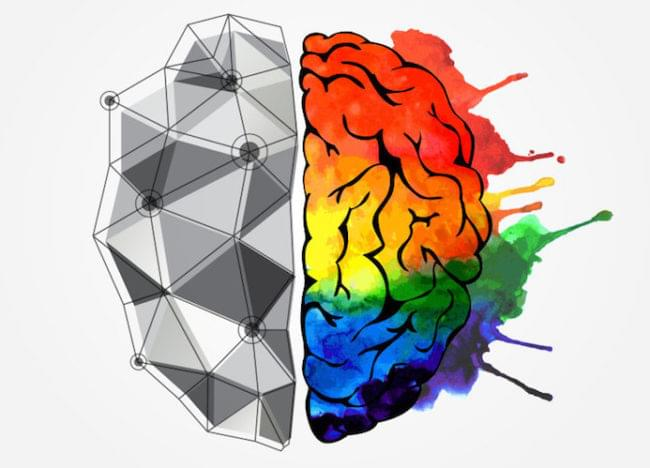

УРОКИ ГРИ НА ФОРТЕПІАНО В МУЗИЧНІ ШКОЛІ
ШЛЯХ ДО ВІРТУОЗНОГО ВИКОНАННЯ У НАЙКОРОТШІ ТЕРМІНИ
Музична школа пропонує уроки фортепіано для дорослих і дітей від 3-х років, в тому числі онлайн уроки фортепіано по скайпу або Google Meet. Цікава і захоплююча подача теорії, практика на інструменті під чуйним керівництвом професійних педагогів дають можливість опанувати фортепіано до рівня виступів на міжнародних конкурсах.
Наша школа – найбільш визнана школа, яка проводить навчання гри на піаніно в Кривому Розі для дорослих і дітей. На заняттях для дорослих ми ставимо в пріоритет баланс якості навчання з оптимально підібраним саме для вас графіком відвідування. Незалежно від наявності або відсутності у вас досвіду, підхід до процесу навчання індивідуальний. Вже після першого заняття для вас стане очевидно, наскільки величезний ваш творчий потенціал.
Для дітей уроки фортепіано в нашій школі проходять в дружній, невимушеній атмосфері, яка націлює дитину на навчання без тиску, критики і негативних оцінок. Ми використовуємо методики, які включають в себе заохочення розвитку творчих здібностей через пізнання дивовижного світу мистецтва гри на фортепіано. Малюки знайомляться з творами великих композиторів, вчаться розуміти їх і любити.
Такий підхід до розвитку дає можливість виховувати всебічно розвинених, відкритих до нового і емоційно зрілих дітей.

Навчання на піаніно в нашій школі розвиває дитину психологічно і розумово через дрібну моторику рук, вчить координації тіла, формує правильну поставу і витончені кисті. Досвід виступів на конкурсах різних рівнів, в тому числі міжнародних, розвиває артистизм, впевненість в собі, сміливість перед публікою, виховує змагальний дух і прагнення до успіху.
Наша музична школа оснащена сучасними музичними інструментами, які постійно оновлюються і обслуговуються. Для занять вам необхідний мінімальний набір – нотний зошит і зошит в клітинку, ручка, бажання вчитися і пізнавати нове!
Для занять ви можете вибрати інструмент, який найбільш підходить вам чи вашій дитині – класичне фортепіано, синтезатор або цифрове піаніно. Запишіться на пробне заняття, на якому досвідчений педагог докладно розповість про процес навчання, допоможе вибрати інструмент. Тільки торкнувшись клавіш, юний музикант буде з нетерпінням чекати нового уроку!
Приходьте всією родиною на курси фортепіано в Кривому Розі для дітей та дорослих – тут мрії стають реальністю!